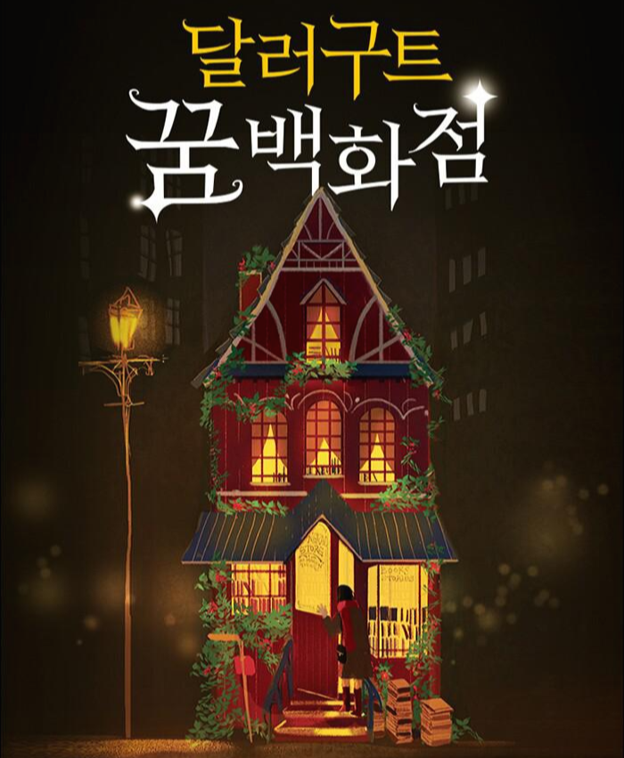

독서 통계
수연이
100
읽은 시간
50
읽은 권수
5
참여한 모임
TOP 장르
판타지
철학
예술
책장
내가 좋아할 만한 책

"판타지" 장르를 좋아하시는군요!
“저는 세 번째 제자의 선택이 잘 이해되지 않았어요. 첫 번째 제자가 다스리기로 한 미래에는 무슨 일이든 생길 수 있는 무한한 가능성이 있죠, 게다가 두 번째 제자가 다스리기로 한 과거에는 지금까지 겪어 온 귀중한 경험들이 있고요. 미래에 대한 희망과 과거로부터의 배움. 이 2가지는 현재를 살아가는데 너무도 중요한 것들이에요.” 달러구트가 보일 듯 말 듯 고개를 끄덕였다. 페니는 멈추지 않고 말했다. “하지만 잠든 시간은 어떤가요? 잠들어 있는 동안에는 아무 일도 벌어지지 않죠. 그저 가만히 누워 시간을 보낼 뿐이에요. 말이 좋아 휴식이지, 실제로는 인생의 낭비라고 생각하는 사람도 있을 거예요. 인생을 통틀어 몇십 년을 누워지내는 셈이니까요! 하지만 말이죠, 시간의 신은 가장 총애하던 세 번째 제자에게 ‘잠든 시간’을 맡겼어요. 그리고 사람들이 자는 동안 꿈을 꾸게 하라고 했죠. 왜 그랬을까요?” 페니는 질문하는 척하면서 잠깐 뜸을 들이고 생각할 시간을 벌었다. “저는 꿈에 대해 생각할 때마다 이 질문을 떠올려요. ‘사람은 왜 잠을 자고 꿈을 꾸는가?’